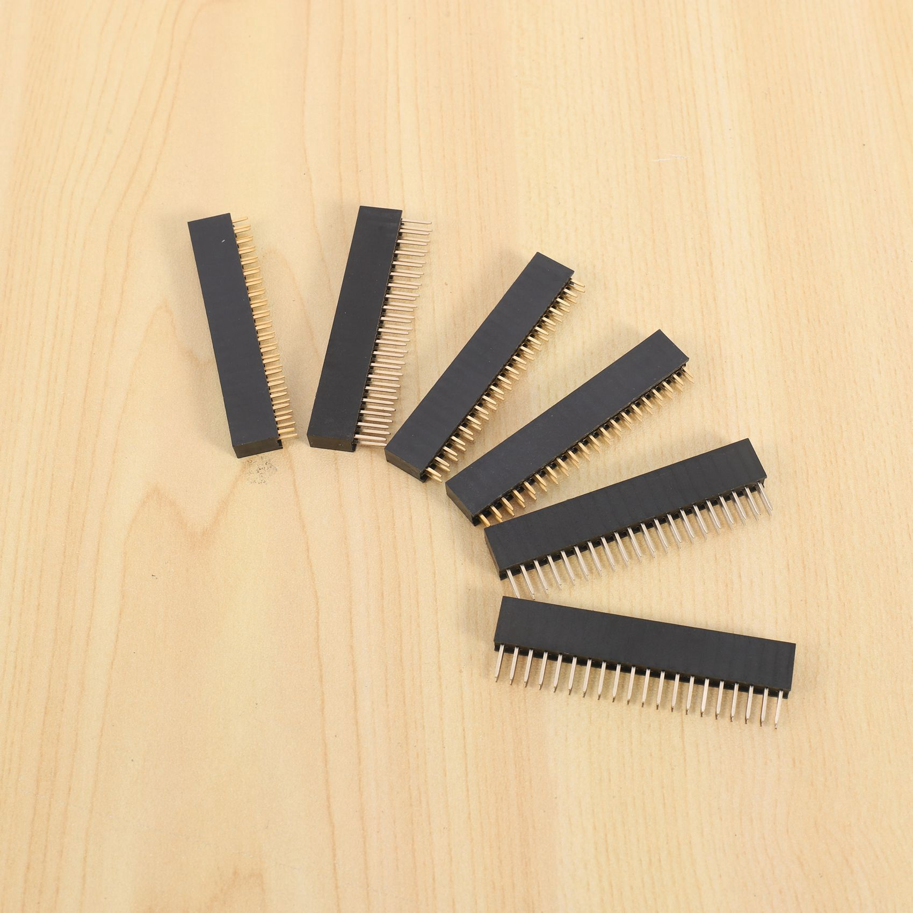

Разъёмы
Угловые GPIO-разъёмы 20×2 (24 шт.)
Это угловые 40-контактные GPIO-разъёмы формата 2×20, обычно применяемые для подключения плат и модулей к Raspberry Pi и совместимым устройствам.

Документация
Официальная спецификация Raspberry Pi HAT+ — про 40-контактный GPIO-разъём 2×20Официальный datasheet Raspberry Pi 4 Model B — про стандартный 40-pin GPIO headerRP1 Peripherals — описание 40-pin GPIO connector и функций выводов
Характеристики
Тип
угловой штыревый разъём
Количество контактов
40 (2×20)
Шаг контактов
2,54 мм (0,1")
Исполнение
right-angle / угловой
Монтаж
пайка в отверстия платы
Назначение
подключение GPIO и питания
Совместимость
стандартный 40-pin GPIO header Raspberry Pi
Поляризация
без ключа, прямой двухрядный ряд
Применение
HAT, переходники, платы расширения
Подробнее
Деталь представляет собой угловой штыревый разъём для пайки на плату в формате 2×20 (40 контактов) с шагом 2,54 мм. Такие разъёмы используют как GPIO-вывод на платах Raspberry Pi и совместимых HAT/расширениях, где важны питание, земля и линии ввода-вывода. Угловое исполнение удобно, когда нужен боковой вывод кабеля или переход к низкопрофильному монтажу. Обычно применяется в наборах для пайки, переходниках, шилдах и самодельных платах расширения.
hw-2026-049